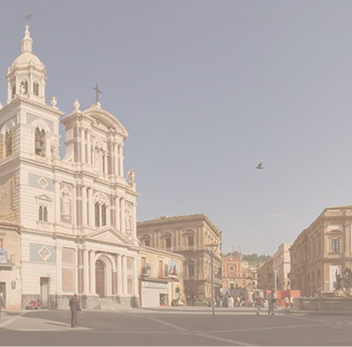
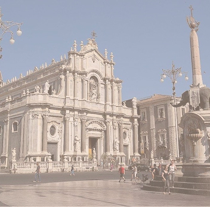
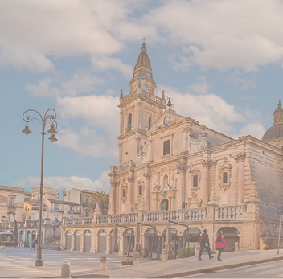
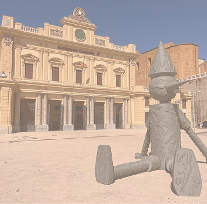
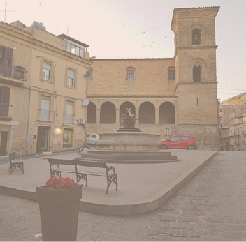
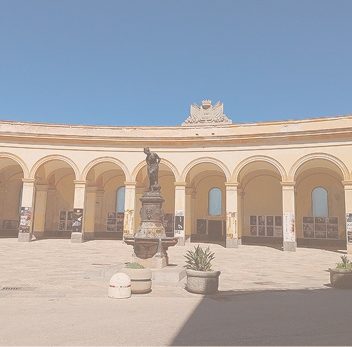

Piazze
Le piazze della Sicilia

Piazza Duomo,
Messina
Un elegante salotto a cielo aperto, dove la maestosità del Duomo e la luce dello Stretto si fondono in un’armonia senza tempo.

Piazza del Duomo,
Siracusa
Uno splendore barocco nel cuore di Ortigia, incorniciato da maestosi palazzi storici e dal Duomo di Siracusa.

Piazza Duomo,
Palermo
Un maestoso capolavoro architettonico che fonde stili normanni, arabi e gotici.

VisitaPiazza G. Garibaldi,
Caltanissettaa
È la piazza principale, elegante e luminosa, dominata dalla Cattedrale di Santa Maria la Nova e cuore della vita sociale nissena.

VisitaPiazza Duomo,
Catania
Il cuore barocco della città, dominata dalla maestosa Cattedrale di Sant’Agata e dall’iconica Fontana dell’Elefante.

VisitaPiazza San Giovanni,
Ragusa
L’ampio spazio urbano di Ragusa Superiore, dominato dalla maestosa Cattedrale di San Giovanni Battista e centro della vita cittadina.

VisitaPiazza G. Marconi,
Agrigento
Piazza centrale di Agrigento, punto di passaggio vicino alla stazione ferroviaria e luogo di incontro tra residenti e visitatori.

VisitaPiazza F. P. Neglia,
Enna
È una piccola piazza nel centro storico di Enna, conosciuta per i suoi edifici storici e per l’atmosfera tranquilla tipica della città alta.

VisitaPiazza Mercato del Pesce,
Trapani
Un elegante salotto a cielo aperto, dove la maestosità del Duomo e la luce dello Stretto si fondono in un’armonia senza tempo.